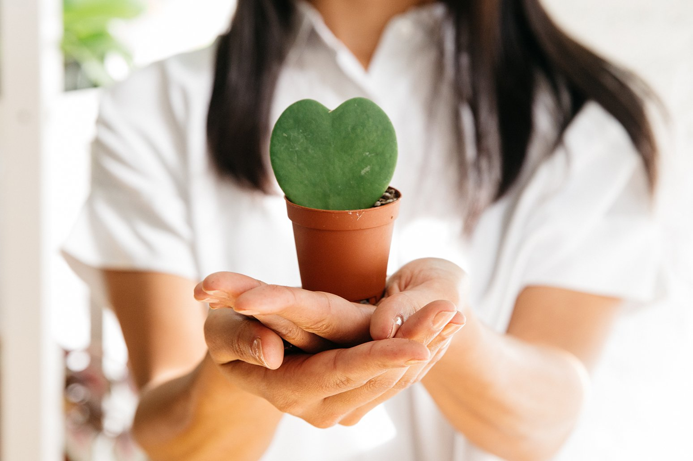

About Us
Our mission is to make the experience of discovering the perfect potted plants as wonderful as the plants themselves. The Sill is the source that bridges the gap between plants and people, offering products and services that fit with your personal style, your lifestyle, and your budget.
Email us at hellofronds@plantbased.com